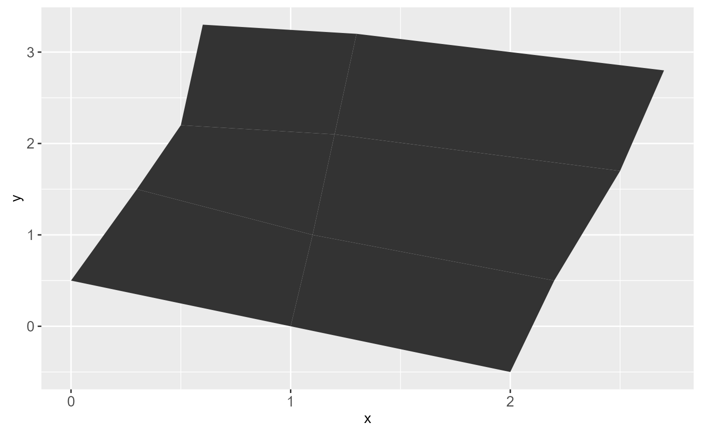
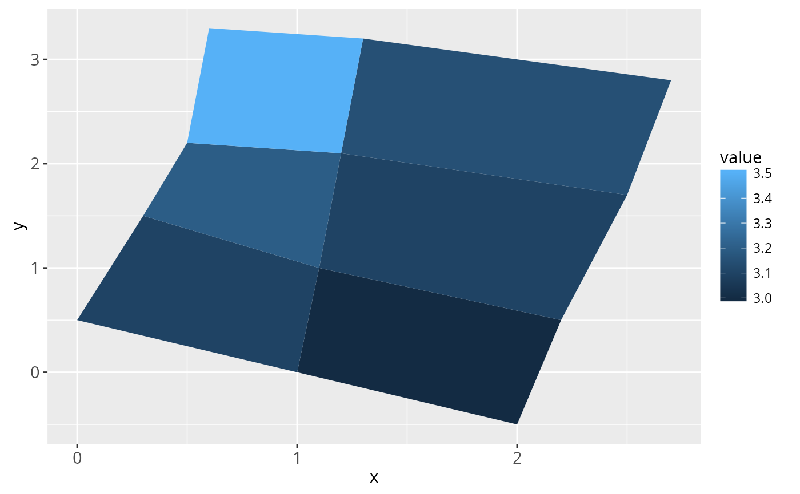
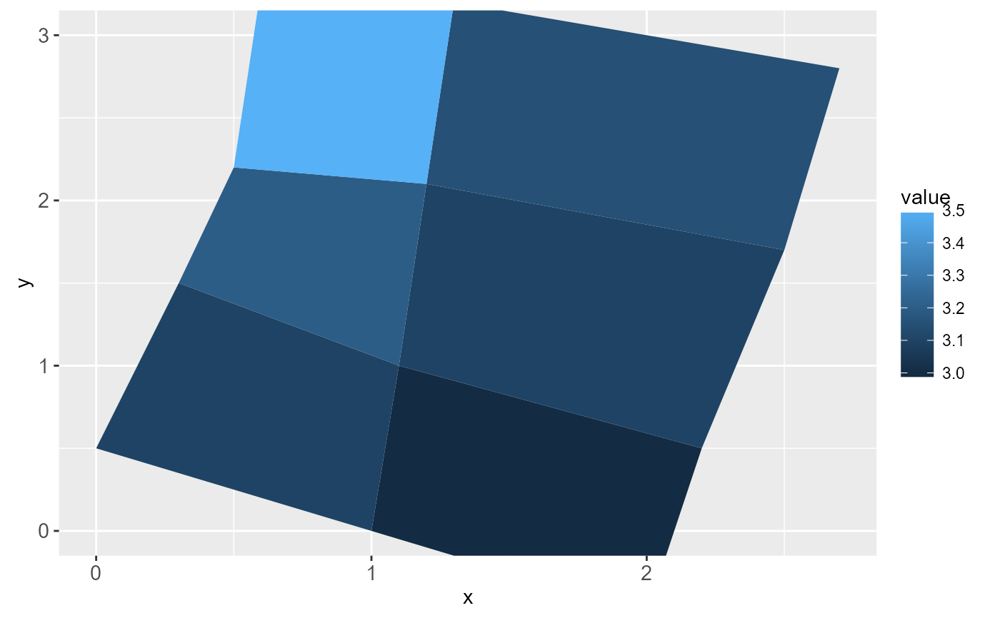

Does not affect position scales.
Usage
geom_map(
mapping = NULL,
data = NULL,
stat = "identity",
...,
map,
na.rm = FALSE,
show.legend = NA,
inherit.aes = TRUE
)Arguments
- mapping
Set of aesthetic mappings created by
aesoraes_. If specified andinherit.aes = TRUE(the default), it is combined with the default mapping at the top level of the plot. You must supplymappingif there is no plot mapping.- data
The data to be displayed in this layer. There are three options:
If
NULL, the default, the data is inherited from the plot data as specified in the call toggplot.A
data.frame, or other object, will override the plot data. All objects will be fortified to produce a data frame. Seefortifyfor which variables will be created.A
functionwill be called with a single argument, the plot data. The return value must be adata.frame., and will be used as the layer data.- stat
The statistical transformation to use on the data for this layer, as a string.
- ...
other arguments passed on to
layer. These are often aesthetics, used to set an aesthetic to a fixed value, likecolor = "red"orsize = 3. They may also be parameters to the paired geom/stat.- map
Data frame that contains the map coordinates. This will typically be created using
fortifyon a spatial object. It must contain columnsxorlong,yorlat, andregionorid.- na.rm
If
FALSE(the default), removes missing values with a warning. IfTRUEsilently removes missing values.- show.legend
logical. Should this layer be included in the legends?
NA, the default, includes if any aesthetics are mapped.FALSEnever includes, andTRUEalways includes.- inherit.aes
If
FALSE, overrides the default aesthetics, rather than combining with them. This is most useful for helper functions that define both data and aesthetics and shouldn't inherit behaviour from the default plot specification, e.g.borders.
Aesthetics
geom_map understands the following aesthetics (required aesthetics are in bold):
map_id
alpha
colour
fill
linetype
size
Examples
# When using geom_polygon, you will typically need two data frames:
# one contains the coordinates of each polygon (positions), and the
# other the values associated with each polygon (values). An id
# variable links the two together
ids <- factor(c("1.1", "2.1", "1.2", "2.2", "1.3", "2.3"))
values <- data.frame(
id = ids,
value = c(3, 3.1, 3.1, 3.2, 3.15, 3.5)
)
positions <- data.frame(
id = rep(ids, each = 4),
x = c(2, 1, 1.1, 2.2, 1, 0, 0.3, 1.1, 2.2, 1.1, 1.2, 2.5, 1.1, 0.3,
0.5, 1.2, 2.5, 1.2, 1.3, 2.7, 1.2, 0.5, 0.6, 1.3),
y = c(-0.5, 0, 1, 0.5, 0, 0.5, 1.5, 1, 0.5, 1, 2.1, 1.7, 1, 1.5,
2.2, 2.1, 1.7, 2.1, 3.2, 2.8, 2.1, 2.2, 3.3, 3.2)
)
ggplot(values) + geom_map(aes(map_id = id), map = positions) +
expand_limits(positions)

ggplot(values, aes(fill = value)) +
geom_map(aes(map_id = id), map = positions) +
expand_limits(positions)

ggplot(values, aes(fill = value)) +
geom_map(aes(map_id = id), map = positions) +
expand_limits(positions) + ylim(0, 3)

# Better example
crimes <- data.frame(state = tolower(rownames(USArrests)), USArrests)
crimesm <- reshape2::melt(crimes, id = 1)
if (require(maps)) {
states_map <- map_data("state")
ggplot(crimes, aes(map_id = state)) +
geom_map(aes(fill = Murder), map = states_map) +
expand_limits(x = states_map$long, y = states_map$lat)
last_plot() + coord_map()
ggplot(crimesm, aes(map_id = state)) +
geom_map(aes(fill = value), map = states_map) +
expand_limits(x = states_map$long, y = states_map$lat) +
facet_wrap( ~ variable)
}
#> Loading required package: maps
#> Warning: there is no package called ‘maps’